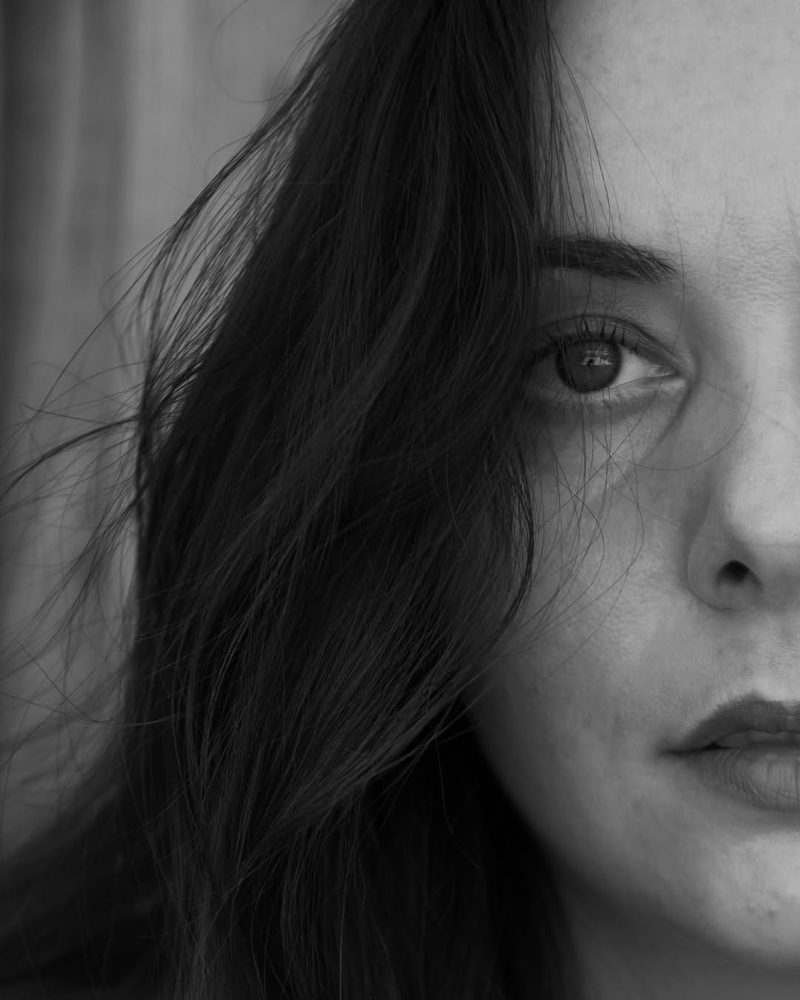

I invite you to my visual diary, where I share the places, moments, and stories that inspire me, while tracing the emotions that leave their mark. This space is a collection of fragments — memories, moods, and self-reflections seen through my lens.
I’m constantly evolving, and so is this collection. Each image is a small piece of that process. Thank you for being part of the journey.
